flowchart TD A["Results Viewer"] --> B B["Build Filter in GUI"] B --> F["Explore Filtered Data"] F --> G["Save JSON filter"] G --> D["Apply filter to New Set"] G --> E["Apply Filter on CLI"]
5 Filtering in OpenCRAVAT
5.1 Why Filter?
Filtering your annotated variants lets you query interesting subsets of your variants.
A secondary purpose of filtering is when you want to view your results in the results viewer and you have more than 100K variants.
5.2 Learning Objectives
After reading this vignette, you should be able to:
- Explain how to build simple filters using the OpenCRAVAT GUI
- Compose multiple filters using boolean logic to make complex filtering
- Save your filter and export it as a JSON file
- Apply your filter to a new set of variants
5.3 Filtering in the GUI
Once you have your annotated results, you can filter variants in the results viewer. There are 4 kinds of filters:
- Samples
- Genes
- Sample Properties
- Variant Properties
We will go through each of these filters and their functionality after we talk about the common GUI elements of each.
5.4 Sample Data for Demonstration Purposes
We will use a subset of a synthetic dataset that is a trio. There are 5 individuals in this dataset.
- The Proband
- Mother
- Father
- Sibling 1
- Sibling 2
Some of the variants are shared by the Proband and Mother, and all other combinations. We will leverage these different combinations in our example below.
5.4.1 Downloading the Sample Data
You can download the sample result file here: Synthetic Trio Dataset
On the command line, you can download it into your current directory with wget:
wget https://github.com/laderast/oc_vignettes/raw/main/data/Session2.filtered.sqliteWhen you’re ready, open up the file with oc gui:
oc gui Session2.filtered.sqlite5.4.2 Samples
You can remove variants associated with a set of sample IDs by clicking on the checkboxes here. For example, we want all of the variants that are associated with the mother. We’ll click on the “mother” checkbox until it is a green check.
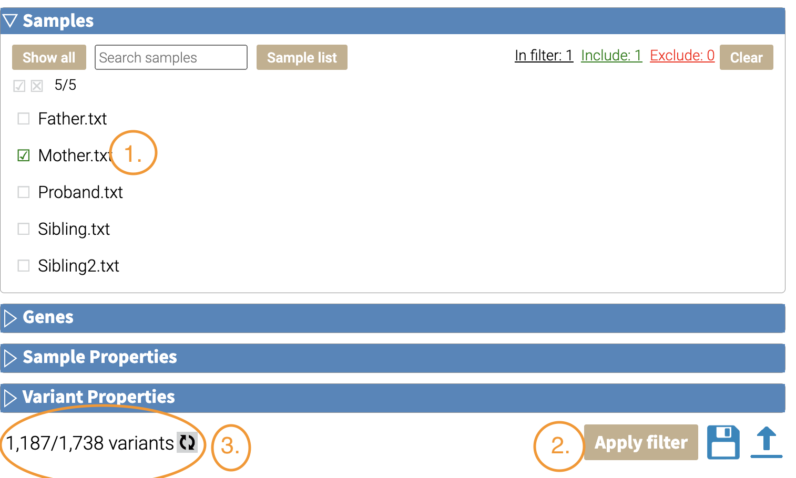 If we look at the Variant tab, we can see that our variants include multiple members:
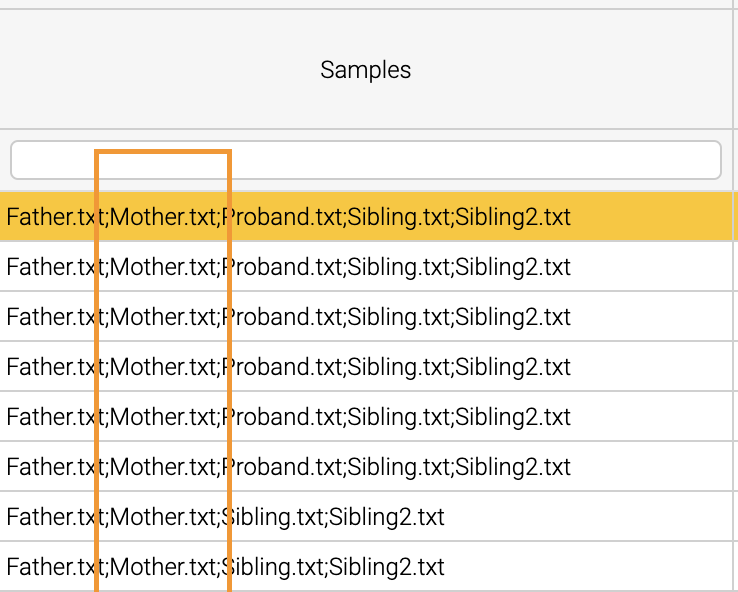 Here’s a visual summary of the results.
graph TD A["All Variants\n(n=1,738)"] --"Sample:mother"--> B B["Mother Variants\n(n=1187)"]
These are all of the variants that are associated with the mother, and include variants that are shared by other family members. What about variants that are exclusive to the mother?
For example, we can filter for
To exclude samples, click on the checkbox until you see a red x.
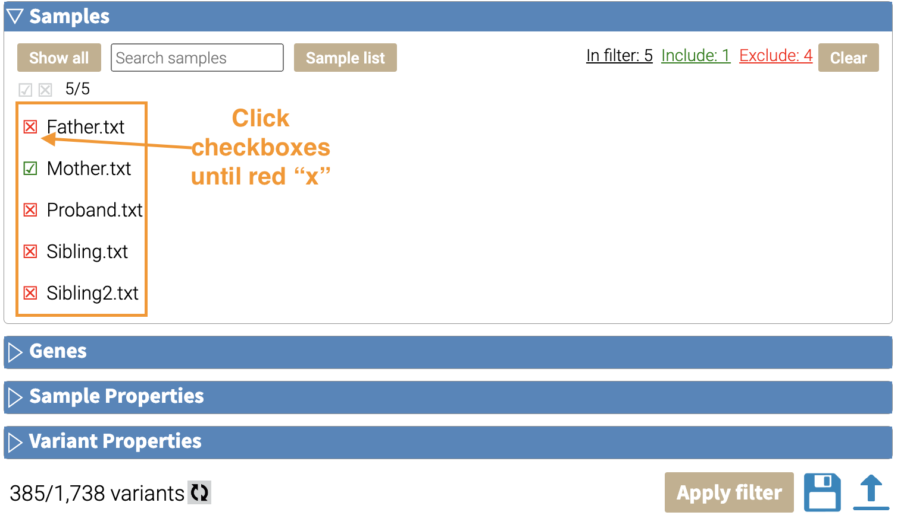 After filtering, we find that 385 variants are exclusive to the mother. We can confirm this by going to the Variant tab:
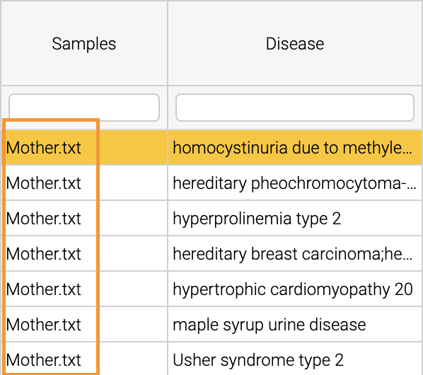 Here’s the visual summary:
graph TD A["All Variants\n(n=1,738)"] --"Sample:mother\nExclude:others"--> B B["Mother Variants\n(n=385)"]
5.4.3 Genes
Gene-level filtering can be done here. You can input a list of genes, separated by line-breaks.
Clearing our previous filter, let’s filter to only those variants that are in BRCA1 and BRCA2.
To filter, we take the following steps in the Gene filter section:
- Enter a list of genes, 1 gene per line in the text box. You can also upload a list of genes as well.
- Apply the filter
- See the results. There are 63 variants associated with BRCA1/BRCA2.
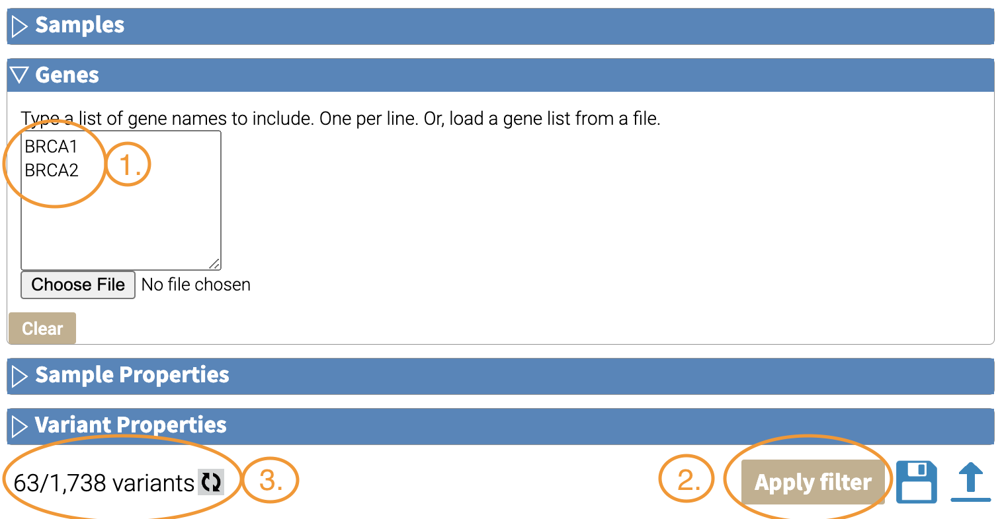 Going to the Variant tab, we can confirm that the variants belong to BRCA1 and BRCA2.
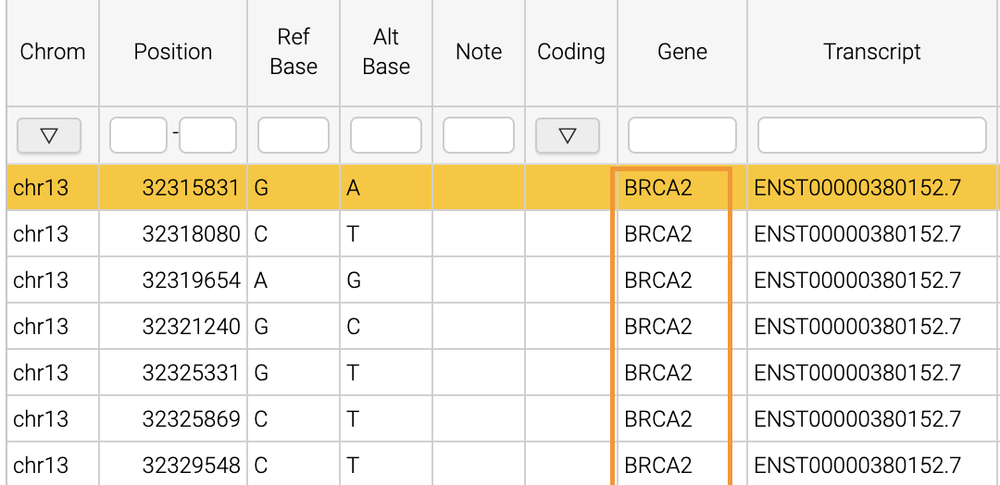 Here’s the visual summary of the filter:
graph TD A["All Variants\n(n=1,738)"] --"Gene:(BRCA1,BRCA2)"--> B B["BRCA1/BRCA2 Genes\n(n=63)"]
5.4.4 Sample Properties
5.4.5 Variant Properties
In variant properties, you can filter by variant type based on your annotations. For example, let’s filter our dataset to missense variants.
A. Under Variant Properties:
- Click on “Query Builder”.
- Mouse into the left bottom corner of the query builder window, and click the “+” sign.
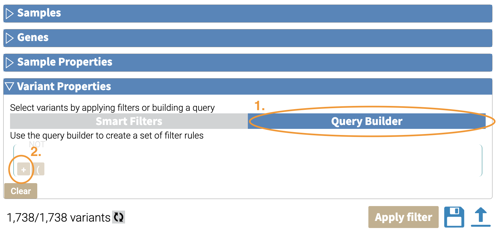
B. Make your filter by selecting the values for the following dropdown boxes:
- Variant Annotation
- Sequence Ontology
- One of
- Missense checkbox
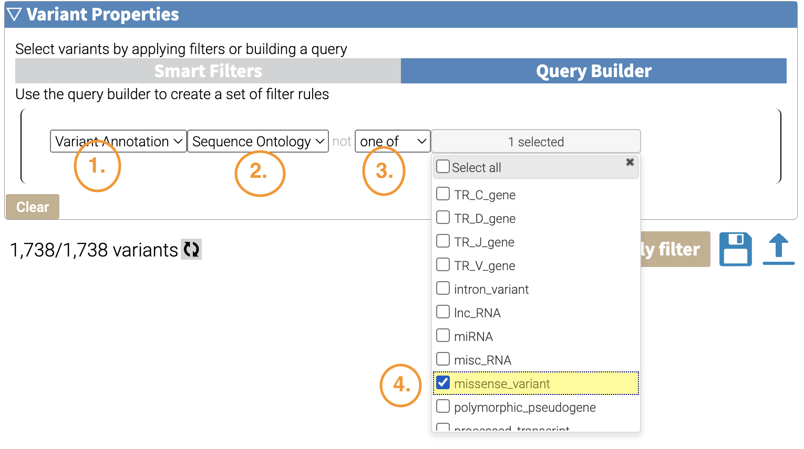 C. Finally, click the “Apply Filter” Button:
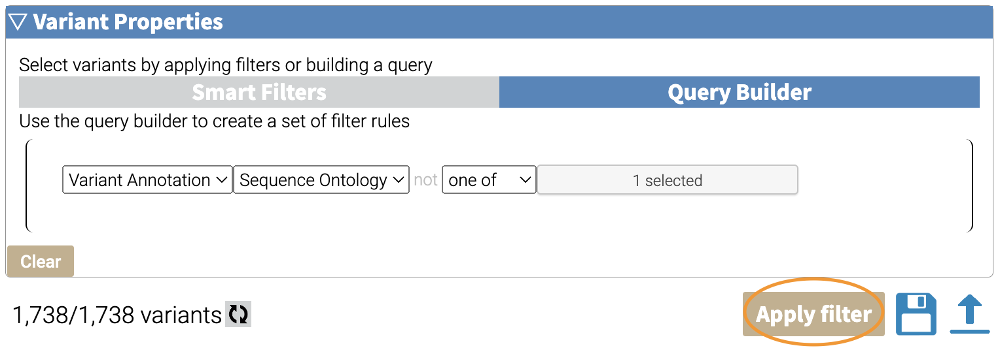
You will be left with 299 variants. Here’s a visual summary of what we did:
graph TD A["All Variants\n(n=1,738)"] --"Sequence Ontology:\nMissense"--> B["Missense Variants\n(n=299)"]
5.5 Advanced: Boolean Operations
You can build more sophisticated operations by combining each filter step using Boolean logic.
5.5.1 Adding Another Filter
You can add another filter by clicking the + underneath your filter.
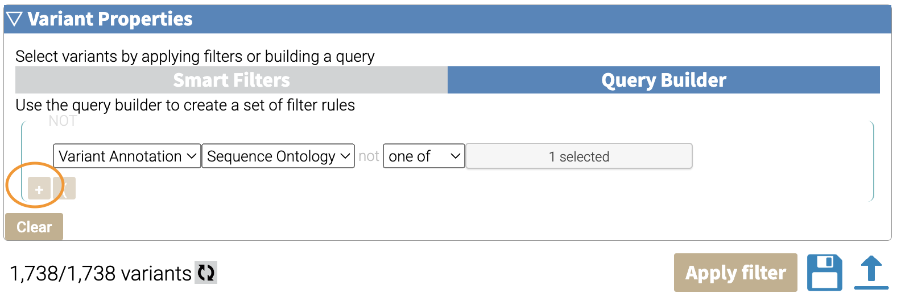
5.5.2 AND Logic
By default, the filters are combined using AND logic, which are more restrictive, because they require variants to meet both filters.
Here’s an example of using AND logic. Here we are combining two filters: Missense Variants (from Variant Annotation >> Sequence Ontology) and Pathogenic variants (from ClinVar >> Clinical Significance).
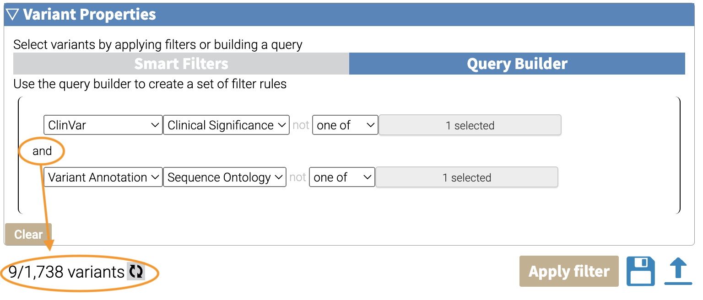 Then do the following:
- Select “ClinVar”
- Select “Clinical Significance”
- Select “One of”
- Select “Pathogenic”
- Click “Filter Result”
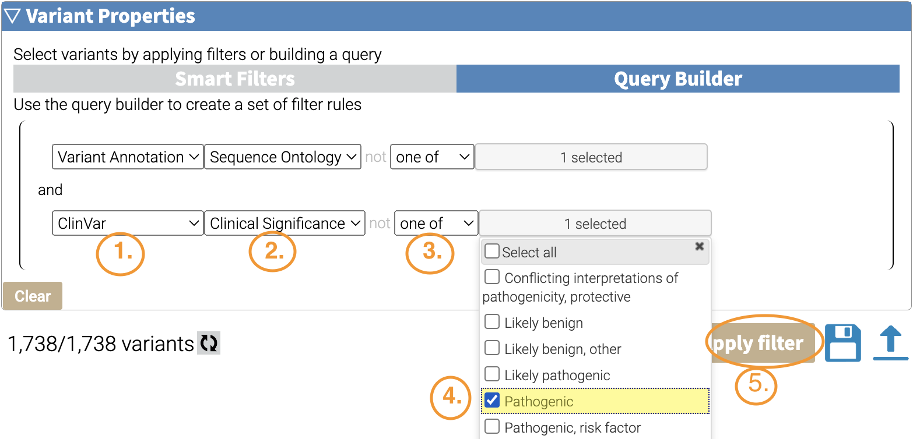 If we look at the Variant tab, we can see that our combined filter selected both Pathogenic and Missense Variants.
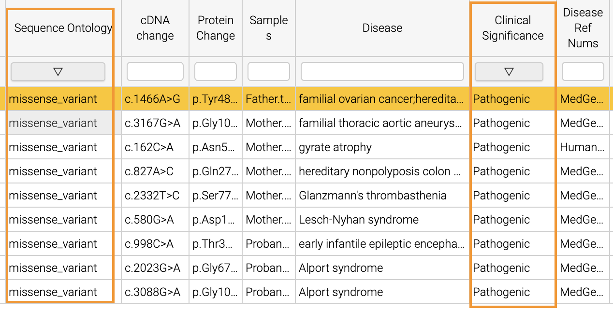
When we apply the filter, we get 9 variants that meet both criteria. Here’s a visual summary of the filtering:
graph TD A["All Variants\n(n=1,738)"] --"Sequence Ontology:\nmissense"--> B["Missense Variants\(n=299)"] A --"Clinical Significance:\nPathogenic"--> C["Pathogenic Variants\n(n=10)"] B --"AND"--> E["Pathogenic AND Missense\n(n=9)"] C --"AND"--> E
5.5.3 OR Logic
These filters can also be combined using OR logic, which is more permissive (that is, these filters will return a greater number than the AND logic) we might want variants that are either missense OR pathogenic.
We can do this by clicking the “and” that links our two filters, which will switch it to an “or”:
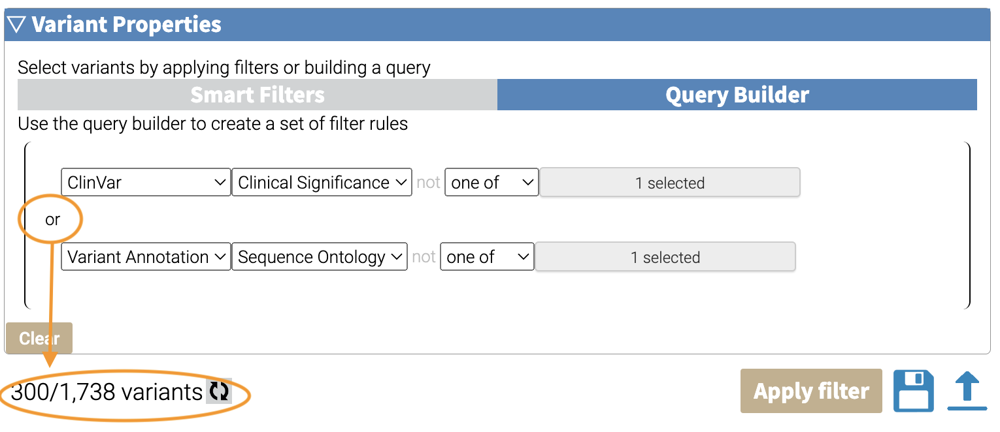 When we apply the filter, we get 300 variants. The breakdown is below.
graph TD A["All Variants\n(n=1,738)"] --"Sequence Ontology:\nmissense"--> B["Missense Variants\n(n=299)"] A --"Clinical Significance:\nPathogenic"--> C["Pathogenic Variants\n(n=10)"] B --"OR"--> E["Pathogenic OR Missense\n(n=300)"] C --"OR"--> E
5.5.4 Grouping With Parentheses
We can use the parentheses to group filters together. This can be helpful when we combine different types of logic.
To make a grouped filter, click the ( button next to the + button in the interface:
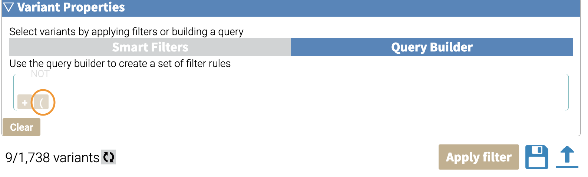
Then you can build a set of filters much like above. Notice that they are grouped within a set of parentheses.
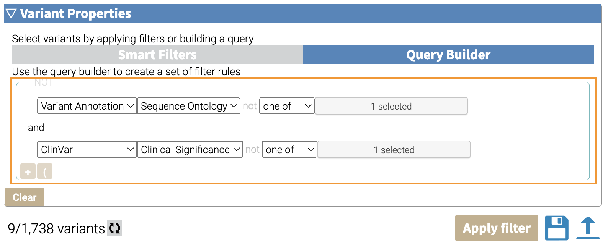 Keep in mind that you can nest parentheses within parentheses to make even more complex filters. We’ll use this to be able to combine three filters with AND and OR logic below.
5.5.5 Combining AND / OR Logic
By default, when you click the “and” / “or” of one set of filters, all filters will be changed. If you want to combine AND / OR logic, you can group one of the logic operations using parentheses.
For example, say we want the above OR subset combined as an AND with those variants that have PS1 evidence.
This is what our final filter looks like:
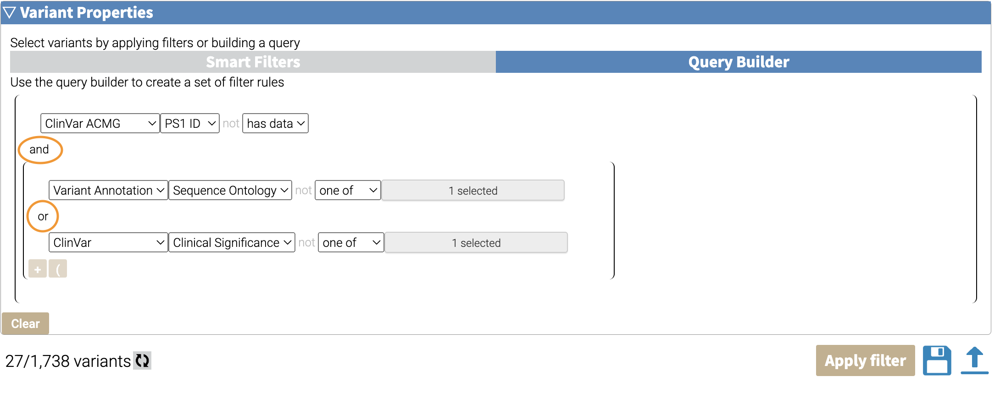 Here’s a visual breakdown of this complex filter:
graph TD A["All Variants\n(n=1,738)"]--"Sequence Ontology:\nmissense"--> B A --"Clinical Significance:\nPathogenic"--> C subgraph OR B["Missense Variants\n(n=299)"] C["Pathogenic Variants\n(n=10)"] B --"OR"--> E["Pathogenic OR Missense\n(n=300)"] C --"OR"--> E end F["PS1 Variants\n(n=27)"] E --"AND"--> G["PS1 Variants AND\n(Missense OR Pathogenic)\n(n=27)"] A --"ClinVar ACMG\nPS1 variants"--> F F --"AND"--> G classDef White fill:#FFFFFF; class OR White
5.5.6 NOT Logic
If we mouse over the top left of a filter or filter group, we’ll see a faint “NOT”.
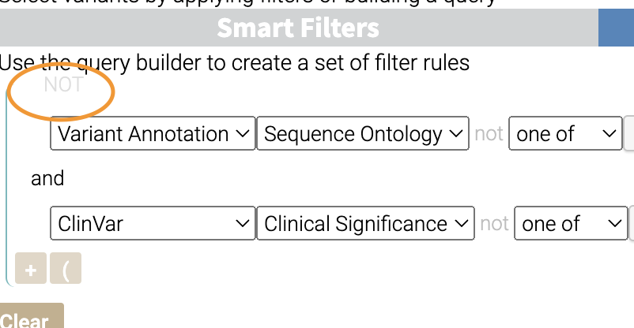
Clicking this will change the logic to NOT.
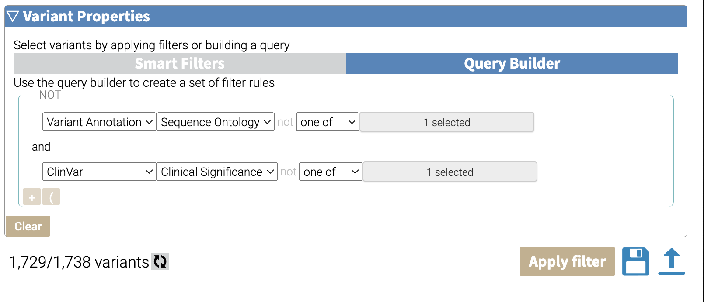
Then we can hit Apply Filter again. In our case, we have 1,729 variants that do not meet our filter criterion. This makes sense because there were 9 variants total that met our grouped criterion, and 1,738 variants total, and 1738 - 9 = 1729.
5.5.7 Deleting a Filter
Finally, if you need to delete a filter, you can mouse to the right of the filter. A faint “X” will appear. Clicking on it will delete that filter.
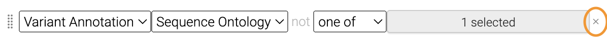
5.6 Exporting Filters as JSON
Filters can be exported and saved as JSON files for further reuse. They can be applied to a new set of variants in the GUI, or can be applied to result SQLite files on the command line.
To export your filters, click on the save icon in the bottom right:
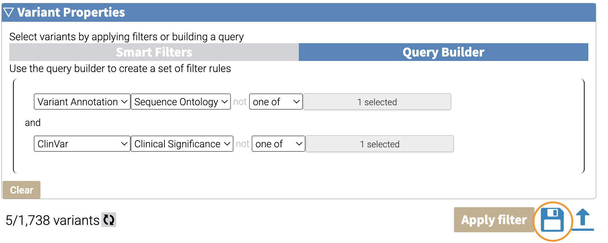 A modal box will pop up and ask you to name your filter set:
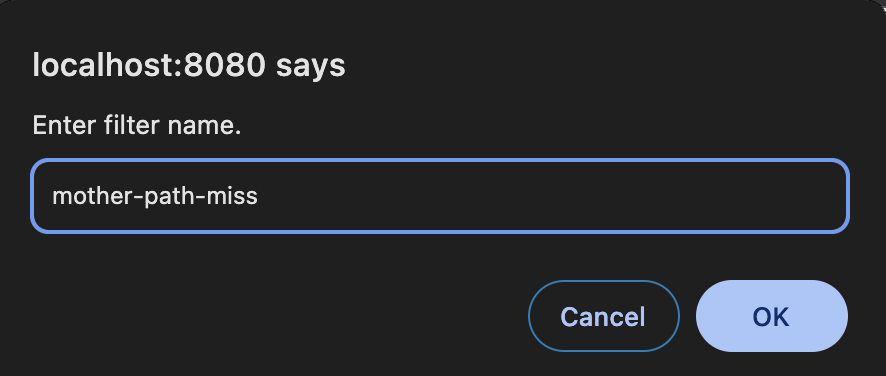
When you click OK, the filter will be saved on the top right:

Finally, you can click on the download button for the individual filter to save it to disk:
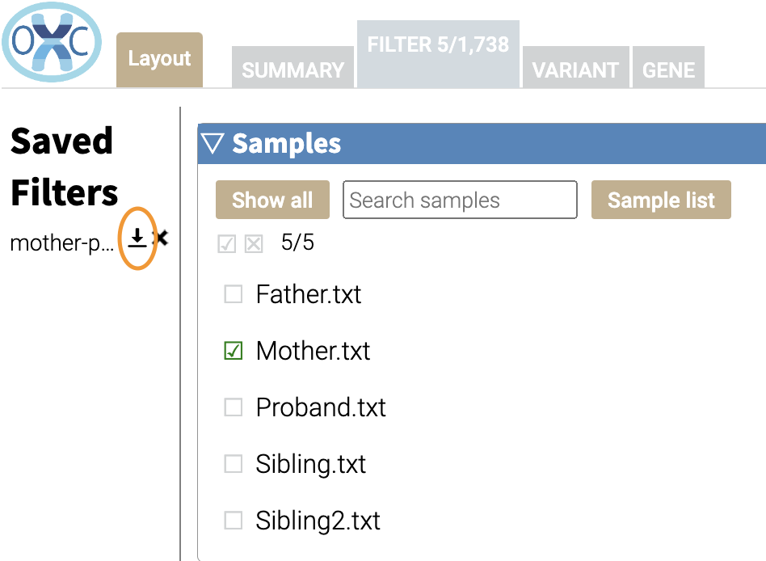
Here’s an example of what a filter looks like in the JSON format:
{
"sample": {
"require": [],
"reject": []
},
"genes": [],
"variant": {
"operator": "and",
"rules": [
{
"operator": "and",
"rules": [
{
"column": "clinvar__sig",
"test": "hasData",
"value": null,
"negate": false
},
{
"column": "clingen__disease",
"test": "hasData",
"value": null,
"negate": false
}
],
"negate": false
}
],
"negate": false
},
"smartfilter": {},
"samplefilter": {
"operator": "and",
"rules": [],
"negate": false
}
}5.7 Applying JSON Filters in the GUI
JSON filters can be applied by clicking on the upload icon:
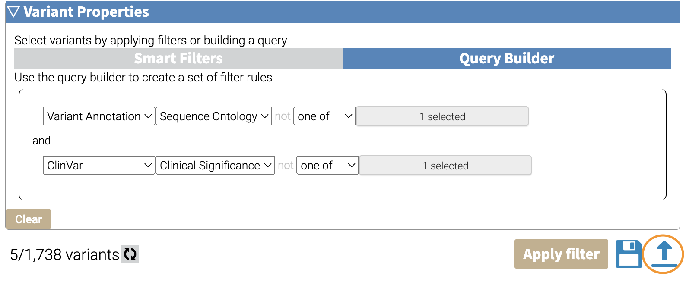
A file select box will pop up and you can select the JSON filter to load it:
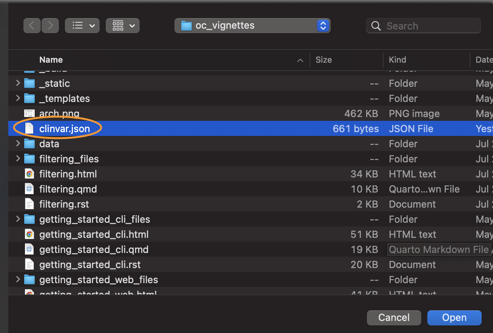
Then you can hit Apply Filter as usual to apply it.
5.8 Applying JSON Filters on the Command Line
JSON filters can also be applied on the command-line using the oc util filtersqlite command. More information is here.
5.9 What You Learned
- Explain how to build simple filters using the OpenCRAVAT GUI
- Compose multiple filters using boolean logic to make complex filtering
- Save your filter and export it as a JSON file
- Apply your filter to a new set of variants